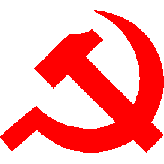

Political Triangle | Three Telos Model
Что за модель трёх телосов?
Модель трёх телосов, также известная как Политический треугольник - это политико-философская модель, которая описывает идеологии, политические взгляды и даже культуру в пространстве трёх фундаментальных целей (телосов). Это отличает её от классического политического компаса, который состоит лишь из двух осей.
Вам будут даны темы и 6 разных мнений о каждой. Вы должны выбрать одно из них, наиболее совпадающее с вашей позицией, либо, если вы не согласны ни с одним утверждением, выбрать вариант "затрудняюсь ответить". Каждый ответ будет слегка влиять на ваши значения по каждой оси (кроме варианта "затрудняюсь ответить"). В конце опроса, ваши ответы сформируют конечную точку на этом компасе. Отвечайте честно!
Что за три телоса (оси)?
Есть три независимые оси, каждая из которых имеет две противоположные ценности. Ниже представлены эти оси с описанием крайних позиций:
Индивидуализм vs Коллективизм
Для индивидуалиста свобода человека (индивида) от коллектива и государства первичная ценность. Для коллективиста достижение целей коллектива и/или государства превыше ценности свободы индивида.
Коллективистские представления господствовали с древности. Человек определялся не как самостоятельная личность, а как часть рода, племени или сословия. Его место и обязанности и задавались принадлежностью к общине, а не личным выбором.
Ростки индивидуализма начали формироваться постепенно - через торговлю, Ренессанс и гуманизм, которые возвели личность в ранг самостоятельной ценности. Реформация укрепила индивидуализм в Северной Европе, провозгласив личную веру и совесть главным источником духовного авторитета, что подорвало власть церкви и сословных структур. Просвещение утвердило эту идею философски: свобода и разум индивида стали мерилом справедливости и источником власти. Из этого корня выросли классический либерализм и конституционализм.
Однако Просвещение дало начало и новому пониманию коллективизма. В XIX веке социалисты, вдохновлённые идеями равенства и общего блага, стремились восстановить чувство общности, "разрушенное индивидуализмом капитализма". Маркс придал этим идеям строгую форму, сведя человека к участнику производственного процесса и носителю классовых интересов. В свою очередь, кризисы индустриального общества и массовая политика начала XX века породили национальный коллективизм - фашизм и национал-социализм, где источник единства видели уже не в классе, а в нации как едином теле, подчиняющем себе личность.
После Второй мировой войны авторитарный коллективизм отступил на Западе, но сохранился в странах соцблока и странах третьего мира - в партийных, религиозных и традиционных формах. Конец XX века принёс кратковременный подъём индивидуализма с неолиберальной волной, однако в XXI веке под воздействием цифровизации и глобализации возникла новая, гибридная форма коллективизма. Она не разрушает индивидуальную автономию стремительно, но постепенно подменяет её участием в общих сетях, трендах и моральных системах согласия. На Западе это оформилось в новой левой повестке, сочетающей идеи социально-экономической и климатической справедливости, идентичности с цифровой взаимозависимостью и культурным конформизмом.
В большей части остального мира коллективизм XXI века соединяет традиционные формы солидарности с современными механизмами власти. Он проявляется то в технократических государствах и идее национального развития, то в религиозных и культурных общинах, где вера, традиция и общий исторический опыт создают чувство принадлежности.
Иерархия vs Равенство 
Сторонник равенства считает, что угнетение пронизывает общество и сознание. Он убеждён, что освобождение от него путём социальных и экономических преобразований должно вернуть человеку контроль над трудом, культурой и смыслом жизни.
Левые движения возникли в XIX веке как ответ на вызовы индустриальной эпохи. Утописты вроде Сен-Симона, Фурье и Оуэна пытались представить моральную альтернативу капитализму, но лишь марксизм придал этим идеям научную основу. Маркс и Энгельс рассматривали историю как процесс классовой борьбы, где экономические отношения определяют политику, культуру и сознание. Освобождение человека, по их мысли, возможно только через упразднение частной собственности и переход к обществу, основанному на коллективном владении средствами производства.
После революции 1917 года марксизм-ленинизм стал идеологией мирового масштаба, а советская авторитарно-левая модель - образцом централизованного социализма, сочетающего коллективное участие с партийным контролем. Во второй половине XX века левые разделились: социал-демократы приняли стратегию реформ в рамках рыночной системы, а коммунистические режимы укрепляли централизованную плановую экономику. В 1960-70е годы на Западе появились "новые левые", вдохновлённые критической теорией Франкфуртской школы. Неомарксисты вроде Адорно, Маркузе и Хабермаса утверждали, что угнетение сохраняется не только в экономике, но и в культуре — через идеологию, язык и медиа, а потому освобождение должно быть и социальным, и моральным.
После краха СССР и подъёма неолиберализма левые ослабли. На Западе они сместили фокус с классовой борьбы на культурное и моральное равенство, сосредоточившись на правах меньшинств, цифровом контроле, социальной и климатической справедливости. В развивающихся странах левые движения сохранили преимущественно экономическую и умеренно-авторитарную направленность, объединяя идеи равенства с антиколониальной риторикой, национальным суверенитетом и критикой неолиберального мирового порядка.
Иерархию называют естественным порядком, по которому человечество жило большую часть истории: от первобытных племён с вождями до античных обществ с рабством и феодальных систем, где власть стекала сверху вниз.
Просвещение и модерн подорвали средневековую институциональную (коллективисткую) иерархию идеями разума, индивидуальных прав и общественного договора (Локк, Вольтер, Руссо). Монарх перестал считаться божественным, а власть стала считаться легитимной только при согласии управляемых. Это привело к революциям (например Американская в 1776 и Французская в 1789) и переходу к конституционным формам правления.
Коллективистская иерархия пережила кризис в XVIII–XIX веках, но переродилась с заменой божественное права на светскую цель. В XIX веке национализм сформулировал её, превратив "общую цель" в волю нации как единого целого. В XX веке, на фоне экономических и политических кризисов, она воплотилась в фашизме и национал-социализме. Государство стало инструментом национального возрождения, а лидер воплощением воли народа. Конкуренция ограничивалась рамками лояльной общности под контролем партийного аппарата.
С падением этих строев, коллективистская иерархия сохраняется в авторитарных государствах, традиционных обществах и немногочисленных монархиях.
Эгалитаризм vs Абсолютизм 
Эгалитарист убеждён, что государство должно обеспечивать равные права для всех граждан, не признавая наследуемой иерархии или каст. Абсолютист считает, что государство должно закреплять иерархию. Права и обязанности, по его мнению, не равны и зависят от сословия/службы. Он верит, что верховный лидер - источник закона.
В основе абсолютизма лежала древняя традиция сакральной власти. Политическая иерархия воспринималась как отражение космического или религиозного порядка. В античной философии неравенство считалось естественным условием гармонии, а в христианской Европе монарх стал посредником между Богом и народом. В XVII веке Гоббс и Боссюэ придали этой традиции системный вид: абсолютный правитель стал источником закона, гарантирующим стабильность.
Эгалитаризм стал философским переворотом этого мировоззрения. Просвещение перенесло основу власти из сакрального в рациональное. У Локка и Руссо все люди были равны от рождения, а государство создавалось по договору для защиты естественных прав.
В XIX веке эгалитаризм разделился на два направления. Либеральное понимало равенство как равенство перед законом и свободу индивидуального выбора. Оно стремилось ограничить власть и защитить частную инициативу. Социалистическое понимало его как равенство условий и возможностей, требующее перераспределения ресурсов и коллективного контроля над производством. Оба направления исходили из общей предпосылки морального равенства человека, но расходились в методах его достижения.
В XIX-XX веках ему начали противостоять националистические и фашистские проекты, отрицающие многие достижения Просвещения и эпохи модерна, включая универсализм, и стремившиеся заменить их принципом коллективной идентичности (этнической или расовой). Они унаследовали от абсолютизма веру в целостность государства и приоритет воли лидера, но придали ей светскую форму - идею национального объединения и достижения общих целей. После поражения фашистских держав, авторитарные и неоабсолютистские режимы сохранились в разных регионах: военные диктатуры Латинской Америки, бюрократические автократии Азии, монархии Персидского залива и постколониальные режимы Африки. Во второй половине XX века на фоне утраты светских идеологий, в исламском мире началось возрождение политического радикального ислама, ставшее новой формой легитимации власти и ответом на секулярные модели модернизации.
Параллельно с демократическими течениями модерна формировалась его рационально-иерархическая линия, основанная на убеждении, что управление должно опираться на знание и компетенцию. Макс Вебер описал её как становление рационально-легального господства, где власть зиждется на нормах и процедурах, а не на воле избирателей. Абсолютную форму этой системы он обозначил как "железную клетку" - механизм, превращающий управление в самоцель.
В начале XX века эти принципы воплотились в меритократических реформах. В США идеи прогрессивистов типа Теодора Рузвельта, Вудро Вильсона, а также крупных банкиров, профинансировавших воплощение проектов типа ФРС, регулирующего денежную эмиссию и ключевую ставку, заложили основы профессиональной госслужбы и постоянного государственного регулирования экономики. В Европе веберовская бюрократия легла в фундамент немецкой и французской моделей, вызвав стремительный рост чиновничьих корпусов.
После ВМВ возник нео-кейнсианский компромисс, соединивший рынок с активной ролью государства. Идеи Кейнса, Самуэльсона и Гэлбрейта придали управлению научно-технический характер, закрепив роль экспертов как посредников между политикой и экономикой. Одновременно усилились наднациональные институты - ООН, МВФ, Всемирный банк, ОЭСР, Европейское сообщество - которые обеспечили координацию глобальной политики, но отдалили принятие решений от избирателя, оформив слой международного административного управления. Со второй половины XX века бюрократическое управление постепенно перешло в форму экспертной координации, в которой значительная часть решений стала приниматься вне электоральных механизмов, но сохраняла их институциональное оформление.
В XXI веке эта модель постепенно приобрела черты административно-технической цельной системы, основанной на обработке данных, алгоритмическом контроле и цифровом регулировании. Концентрация информации в руках государственных и корпоративных структур усилила зависимость общества от экспертных центров и снизила прозрачность принятия решений. Пандемия COVID-19 ускорила этот процесс: под лозунгами "безопасности" и "ответственности" внедрялись системы цифрового надзора, полу-принудительного медицинского учёта и фильтрации информации, частично ставшие элементами постоянной инфраструктуры. Эти меры сопровождались ограничением свобод - блокировками "недостоверных" высказываний и аккаунтов в соцсетях, рестрикцией коммуникаций и перемещений, что обозначило тенденцию к авторитарному управлению.
На этом фоне усилилось антиглобалистское недоверие. От протестов против ВТО в Сиэтле (1999) до споров о "Великой перезагрузке" Клауса Шваба и цифровых паспортах во время пандемии - глобальные инициативы всё чаще воспринимаются как проявление власти вне демократического контроля. Для части общества (особенно это мнение распространено среди правых в Европе и Америке) они стали символом утраты суверенитета и зависимости государств от решений, принимаемых в узком экспертном и финансовом кругу.
Вам не нравятся ваши результаты?
Если у вас какие-либо предложения или конструктивная критика для этого проекта, пишите мне в дискорд (zexxxor) или телеграмм (https://t.me/N0_War)
P.S. За спам в личке буду кидать в чс без разбора